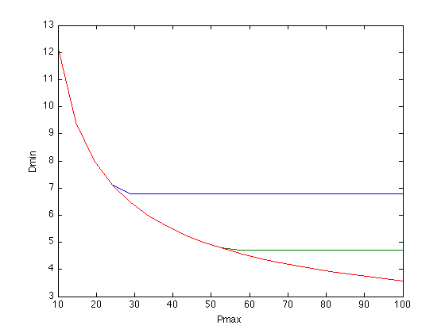

Digital circuit sizing (vectorized)
m = 7;
n = 8;
A = sparse(m,n);
A(1,1) = 1;
A(2,2) = 1;
A(2,3) = 1;
A(3,4) = 1;
A(3,8) = 1;
A(4,1) = -1;
A(4,2) = -1;
A(4,5) = 1;
A(4,6) = 1;
A(5,3) = -1;
A(5,4) = -1;
A(5,7) = 1;
A(6,5) = -1;
A(7,6) = -1;
A(7,7) = -1;
A(7,8) = -1;
Aout = double(A > 0);
Ain = double(A < 0);
f = [1 0.8 1 0.7 0.7 0.5 0.5]';
e = [1 2 1 1.5 1.5 1 2]';
Cout6 = 10;
Cout7 = 10;
a = ones(m,1);
alpha = ones(m,1);
beta = ones(m,1);
gamma = ones(m,1);
N = 20;
Pmax = linspace(10,100,N);
Amax = [25 50 100];
min_delay = zeros(length(Amax),N);
disp('Generating the optimal tradeoff curve...')
for k = 1:length(Amax)
for n = 1:N
cvx_begin gp quiet
variable x(m)
variable t(m)
minimize( max( t(6),t(7) ) )
subject to
cin = alpha + beta.*x;
cload = (Aout*Ain')*cin;
cload(6) = Cout6;
cload(7) = Cout7;
d = cload.*gamma./x;
power = (f.*e)'*x;
area = a'*x;
x >= 1;
power <= Pmax(n);
area <= Amax(k);
Aout'*t + Ain'*d <= Ain'*t;
d(1:3) <= t(1:3);
cvx_end
fprintf(1,' Amax = %3d Pmax = %6.2f delay = %3.2f\n', ...
Amax(k),Pmax(n),cvx_optval);
min_delay(k,n) = cvx_optval;
end
end
plot(Pmax,min_delay(1,:), Pmax,min_delay(2,:), Pmax,min_delay(3,:));
xlabel('Pmax'); ylabel('Dmin');
disp('Optimal tradeoff curve plotted.')
Generating the optimal tradeoff curve...
Amax = 25 Pmax = 10.00 delay = 12.21
Amax = 25 Pmax = 14.74 delay = 9.41
Amax = 25 Pmax = 19.47 delay = 8.01
Amax = 25 Pmax = 24.21 delay = 7.11
Amax = 25 Pmax = 28.95 delay = 6.80
Amax = 25 Pmax = 33.68 delay = 6.80
Amax = 25 Pmax = 38.42 delay = 6.80
Amax = 25 Pmax = 43.16 delay = 6.80
Amax = 25 Pmax = 47.89 delay = 6.80
Amax = 25 Pmax = 52.63 delay = 6.80
Amax = 25 Pmax = 57.37 delay = 6.80
Amax = 25 Pmax = 62.11 delay = 6.80
Amax = 25 Pmax = 66.84 delay = 6.80
Amax = 25 Pmax = 71.58 delay = 6.80
Amax = 25 Pmax = 76.32 delay = 6.80
Amax = 25 Pmax = 81.05 delay = 6.80
Amax = 25 Pmax = 85.79 delay = 6.80
Amax = 25 Pmax = 90.53 delay = 6.80
Amax = 25 Pmax = 95.26 delay = 6.80
Amax = 25 Pmax = 100.00 delay = 6.80
Amax = 50 Pmax = 10.00 delay = 12.21
Amax = 50 Pmax = 14.74 delay = 9.41
Amax = 50 Pmax = 19.47 delay = 8.01
Amax = 50 Pmax = 24.21 delay = 7.11
Amax = 50 Pmax = 28.95 delay = 6.46
Amax = 50 Pmax = 33.68 delay = 5.97
Amax = 50 Pmax = 38.42 delay = 5.59
Amax = 50 Pmax = 43.16 delay = 5.27
Amax = 50 Pmax = 47.89 delay = 5.01
Amax = 50 Pmax = 52.63 delay = 4.79
Amax = 50 Pmax = 57.37 delay = 4.71
Amax = 50 Pmax = 62.11 delay = 4.71
Amax = 50 Pmax = 66.84 delay = 4.71
Amax = 50 Pmax = 71.58 delay = 4.71
Amax = 50 Pmax = 76.32 delay = 4.71
Amax = 50 Pmax = 81.05 delay = 4.71
Amax = 50 Pmax = 85.79 delay = 4.71
Amax = 50 Pmax = 90.53 delay = 4.71
Amax = 50 Pmax = 95.26 delay = 4.71
Amax = 50 Pmax = 100.00 delay = 4.71
Amax = 100 Pmax = 10.00 delay = 12.21
Amax = 100 Pmax = 14.74 delay = 9.41
Amax = 100 Pmax = 19.47 delay = 8.01
Amax = 100 Pmax = 24.21 delay = 7.11
Amax = 100 Pmax = 28.95 delay = 6.46
Amax = 100 Pmax = 33.68 delay = 5.97
Amax = 100 Pmax = 38.42 delay = 5.59
Amax = 100 Pmax = 43.16 delay = 5.27
Amax = 100 Pmax = 47.89 delay = 5.01
Amax = 100 Pmax = 52.63 delay = 4.79
Amax = 100 Pmax = 57.37 delay = 4.60
Amax = 100 Pmax = 62.11 delay = 4.43
Amax = 100 Pmax = 66.84 delay = 4.28
Amax = 100 Pmax = 71.58 delay = 4.15
Amax = 100 Pmax = 76.32 delay = 4.03
Amax = 100 Pmax = 81.05 delay = 3.92
Amax = 100 Pmax = 85.79 delay = 3.82
Amax = 100 Pmax = 90.53 delay = 3.73
Amax = 100 Pmax = 95.26 delay = 3.65
Amax = 100 Pmax = 100.00 delay = 3.57
Optimal tradeoff curve plotted.
